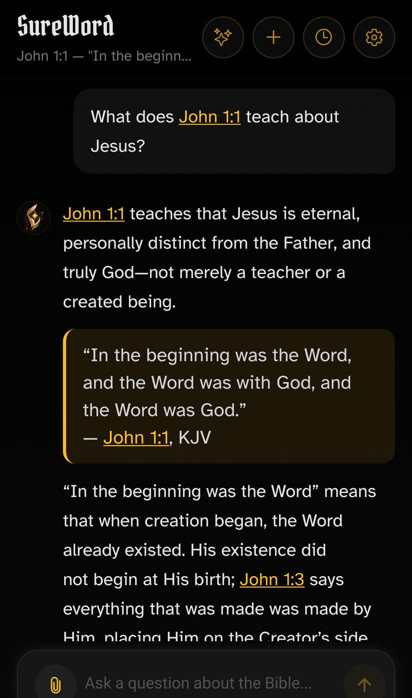
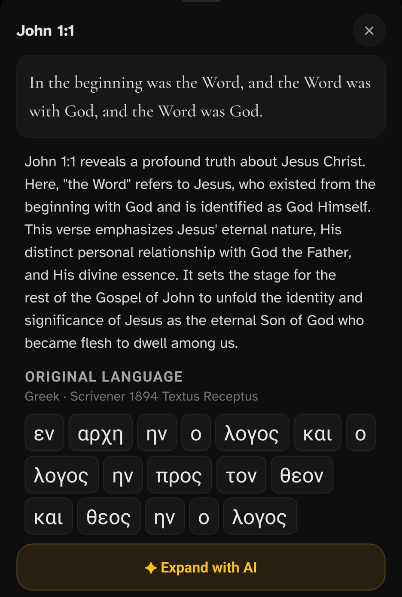
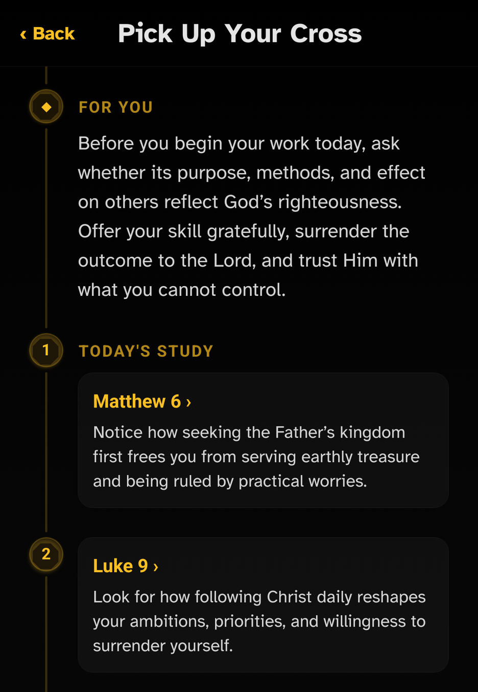
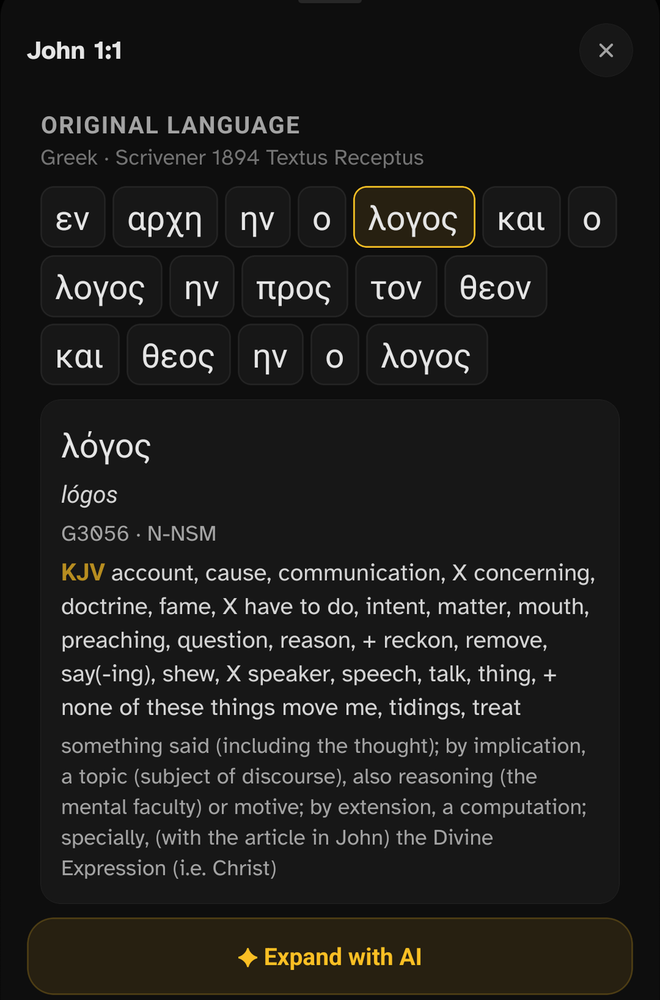
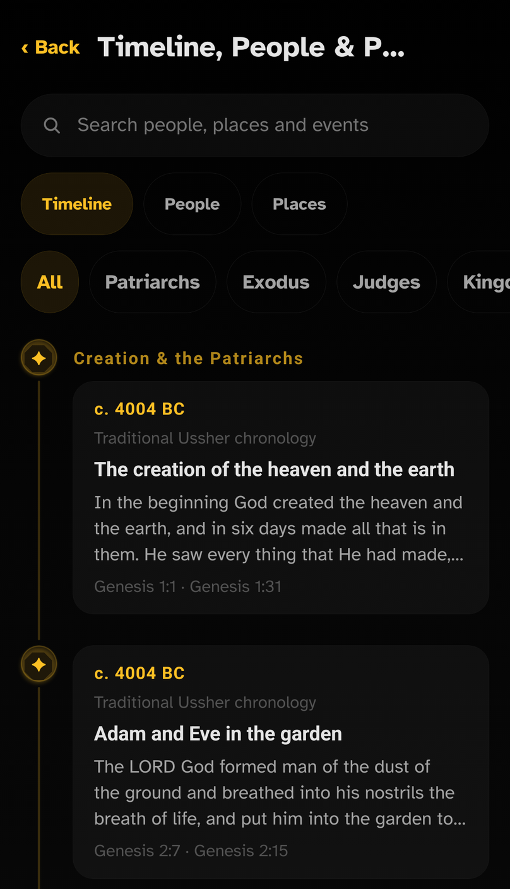
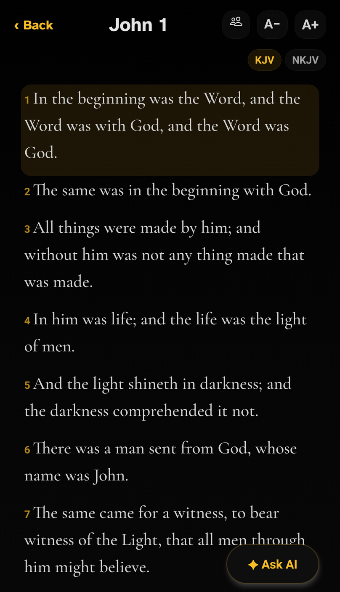
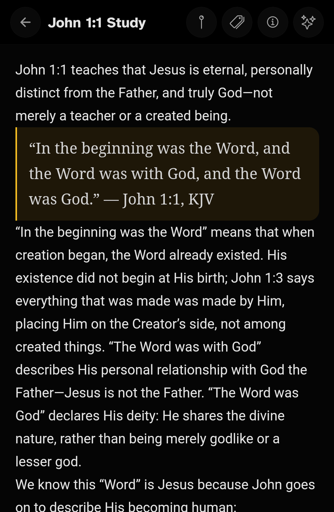
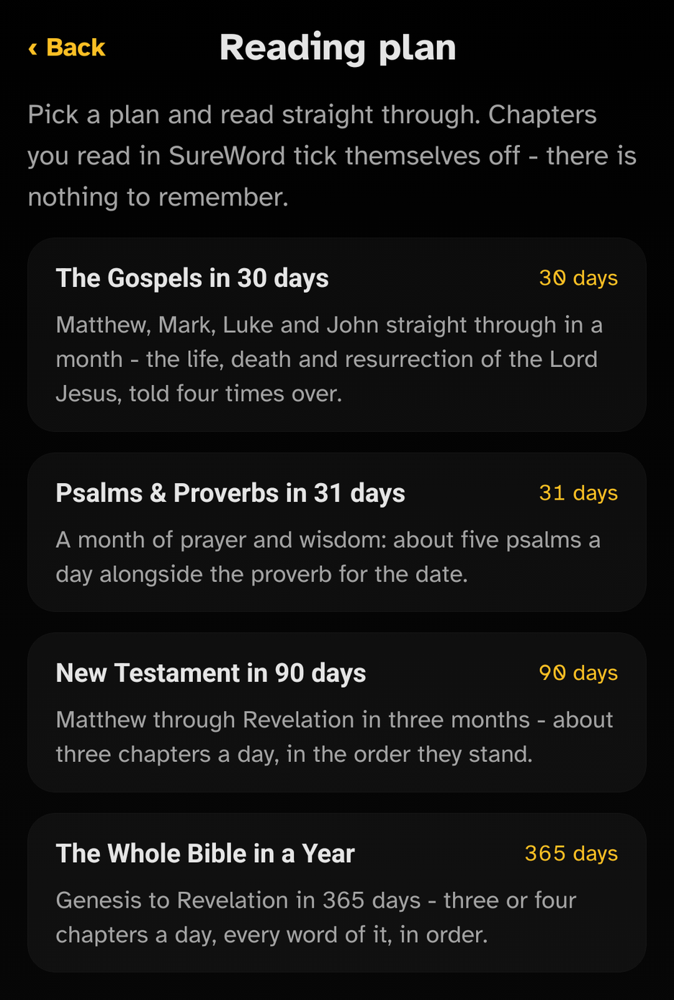

SureWordBIBLE STUDY
Questions welcome.
Scripture first.
Ask about a passage. Follow the linked Scripture.

Ask about a passage. Follow the linked Scripture.

Read an explanation. Keep exploring with AI.

Daily Cross connects your study to everyday life.

Explore Hebrew and Greek with Strong’s definitions.

Connect biblical people, places and events.

Read the KJV offline, wherever the day takes you.

Save answers and verses in your own study notes.

Choose a plan. Progress updates as you read.
